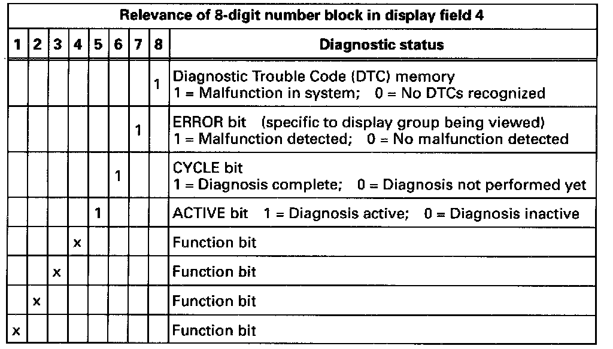

Start Here
Readiness Code, Creating:- Study following chart. Pay special attention to function bits 5, 6, 7 and 8.

Note for vehicles MY 96 only:
If using the procedure to verify a repair, go to the appropriate work step and verify that repair but, if creating a readiness code, follow the work steps in sequence and do not switch the ignition off until the sequence has been completed.
NOTES:
- If a particular bit that you are watching in the Readiness code is obtained sooner than the time specified in the procedure, you can immediately proceed to the next work step.
- An "x" in the diagnostic status means the display can be either a "0" or a "1".
- There must not be a malfunction stored in DTC memory and there must not he any malfunctions detected during diagnostic test!
Special tools, testers and auxiliary items
- VAG 1551/1552 scan tool with VAG 1551/3 adapter cable.
Test sequence
WARNING:
When driving or riding in an airbag-equipped vehicle:
- Never hold test equipment in your hands or lap while the vehicle is in motion. Objects between you and the airbag can increase the risk of injury in an accident.
- Secure tools or test equipment on passenger side floor where it can be safely read by the second technician.
- Connect VAG 1551/1552 scan tool and select "Engine Electronics" address word 01. [1][2][3]Connecting and Operating VAG 1551 Scan Tool
When doing this, the ignition must be switched on.
- Continue on to the Work Step 1.